Neutronics¶
Table of Contents
![digraph G
{
graph[bgcolor="transparent"];
rankdir=TB;
compound=true;
edge [fontname="FreeSans",fontsize=15,labelfontname="FreeSans",labelfontsize=10];
node [fontname="FreeSans",fontsize=15,
shape=record,height=0.2,width=0.4,
color="black", fillcolor="white", style="filled"];
subgraph cluster2
{
style="rounded,filled"; color=orange;
LATT [label="Lattice"];
{
rank=same;
HOM [label="Homogenization"];
REC [label="Reconstruction"];
}
CORE [label="Core"];
label = "Neutronics";
}
LATT -> HOM -> CORE;
{edge[style=invis] LATT -> REC -> CORE };
CORE -> REC -> LATT [constraint = false];
}](../_images/graphviz-8fb1a3b73e6c33b1af4d6d20ab1fa015d962551e.png)
The equations¶
Time dependent neutron transport equation¶
The time dependent neutron transport equation has the following form (Numerical solution of the time dependent neutron transport equation by the method of the characteristics, Journal of Computational Physics Volume 240, 1 May 2013, Pages 248–267)
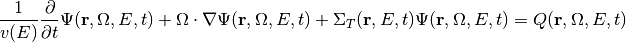
where 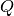 is the total source (including fission, scattering, and delayed neutrons) defined by
![\begin{align*}
Q(\mathbf{r},\Omega,E,t)
& = \int_{(4\pi)}\int_0^{\infty}
\Sigma_{s}(\mathbf{r},\Omega^{\prime}\to\Omega,E^{\prime}\to E,t)
\Psi(\mathbf{r},\Omega^{\prime},E^{\prime},t)
d\Omega^{\prime} dE^{\prime} \nonumber \\
& + \frac{\chi^{p}(\mathbf{r},E,t)}{4\pi}\int_{0}^{\infty}
\left(1-\sum_{q=0}^{N_{q}-1}\beta_q(\mathbf{r},E^{\prime},t)\right)
\nu(E^\prime)\Sigma_{f}(\mathbf{r},E^{\prime},t)
\Phi(\mathbf{r},E^{\prime},t) dE^{\prime} \nonumber \\
& + \sum_{q=0}^{N_q-1}\chi^{d}_q (\mathbf{r},E,t)
\lambda_q C_q(\mathbf{r},t)
\end{align*}](../_images/math/df9607d7766af15aa78e61294b8158e789dbc756.png)
with the equations for the delayed neutron precursors
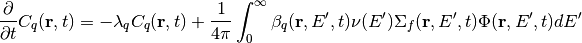
which still requires appropriate boundary conditions in order to be solved.
Steady state neutron transport equation¶
The equations describing the steady state of the system, of capital importance in nuclear reactor calculations, are obtained after setting the time derivatives equal to zero and introducing the delayed neutron precursors equations, as follows
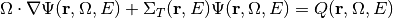
where is the total source (including fission, scattering, and delayed neutrons) defined by
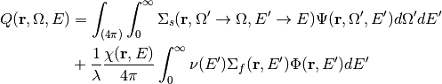
where the fission term has been divided by  , known as the
multiplication factor, being the largest eigenvalue of the system.
We can write the previous equation in operators notation, as follows
, known as the
multiplication factor, being the largest eigenvalue of the system.
We can write the previous equation in operators notation, as follows
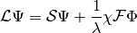
Energy discretization and scattering simplification¶
Next we assume that the fission spectrum does not depends on the position and that the scattering cross section depends only on the angle between the incident neutron and the exiting neutron. Then we discretize the equation in energy by choosing a set of energy bins and integrating over them, weighting with a proper shape function for the energy dependent flux, 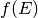, to obtain
![\begin{align*}
& \Omega \cdot \nabla \Psi_g(\mathbf{r},\Omega) +
\Sigma_{T,g}(\mathbf{r}) \Psi_g(\mathbf{r},\Omega) \nonumber \\
& = \sum_{h=0}^{G-1}\int_{4\pi}\Sigma_{s,h\to g}(\mathbf{r},\Omega^{\prime}\cdot \Omega)
\Psi_{h}(\mathbf{r},\Omega^{\prime}) d \Omega^{\prime}
+ \frac{1}{\lambda}\chi_g(\mathbf{r})\frac{1}{4\pi}\sum_{h=0}^{G-1}
\nu\Sigma_{f,h}(\mathbf{r})
\Phi_h(\mathbf{r}) \nonumber \\
& = \sum_{h=0}^{G-1}\sum_{l=0}^{\infty}\frac{2l+1}{4\pi}\Sigma_{s,l,h\to g}(\mathbf{r})
\sum_{m=-l}^{l}\Phi_{lm,h}(\mathbf{r}) Y_{l,m}(\Omega)
+ \frac{1}{\lambda}\chi_g(\mathbf{r})\frac{1}{4\pi}\sum_{h=0}^{G-1}
\nu\Sigma_{f,h}(\mathbf{r})
\Phi_h(\mathbf{r})
\end{align*}](../_images/math/1e886d81c20b5a1c24a138672803cef8678c0588.png)
Which will be written, for every energy group,
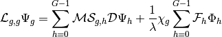
Next we consider isotropic scattering in order to simplify the derivations, thus obtaining
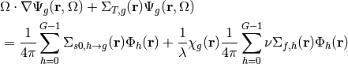
Neutron diffusion equation¶
The previous equation, using asymptotic analysis (Larsen, Edward W., J. E. Morel, and Warren F. Miller. “Asymptotic solutions of numerical transport problems in optically thick, diffusive regimes.” Journal of Computational Physics 69.2 (1987): 283-324.), when we are close to the optically thick, diffusive regimes,
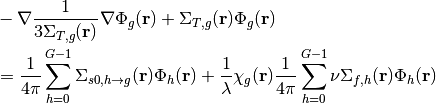
or using the diffusion coefficient and the absorption cross section
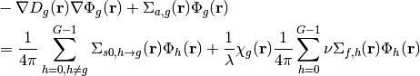
Different spatial scales¶
Different actors participate in this module, being Core and Lattice the main ones, while Homogenization and Reconstruction are the way they talk with each other.

Lattice¶
The target geometry in this module is the following one:

Modeled fuel bundle
Note
Change in the nature of the PDE, from a hyperbolic behavior in materials with small scattering ratio, 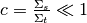 to an elliptic behavior for highly diffusive materials, 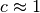. (hp?)
Homogenization¶
This module uses the data from the Lattice module and collapse and condense it using the already calculated solution over this geometry, to generate the data (cross-sections and discontinuity factors) for the next calculation with the Core module.
Reconstruction¶
This module uses the solution from the Core module to reconstruct the boundary conditions to be used in the Lattice module.